A growing library of visual directions
Design Archive.
Reusable palettes, typography, components, and documentation. Each direction is independent and framework-free.

Direction 001 / Version 1.1.0
Research Archive
Warm neutrals, precise rules, technical metadata, and editorial spacing for research and engineering work.
- Tokens
- CSS custom properties + JSON
- Themes
- System, light, and dark
- Type
- Archivo / IBM Plex Sans / IBM Plex Mono
- Best for
- Portfolios, project indexes, documentation